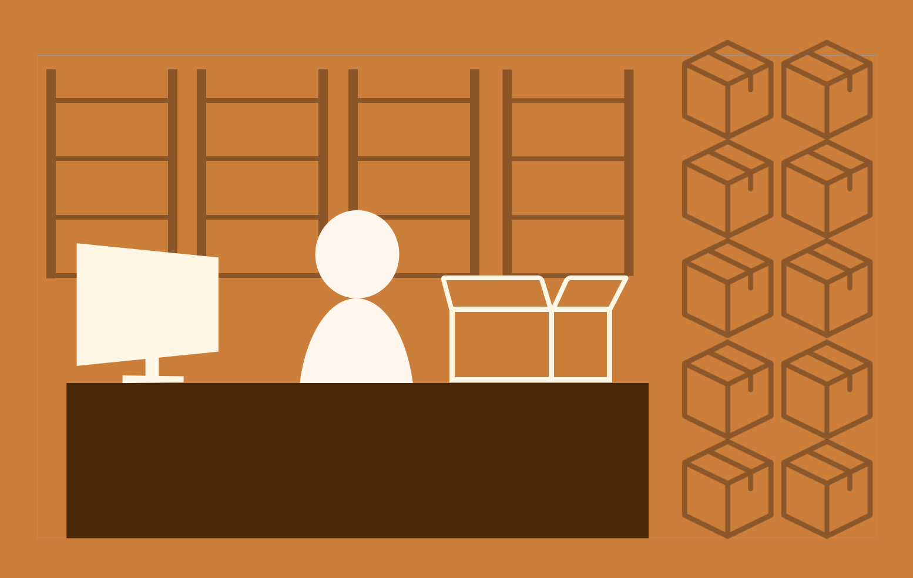

Puhe Liang
Hello! I am
Puhe Liang
A master student in HCI @ University of Michigan
Previous software developer @ SAP
Looking for 2018 UX summer internship
Download Resume
Co-Express Delivery Picking
Computer Supported Collaborative Work
Gifts of Art: Inventory Management
UX Consulting & Contextual Inquiry

E-Commerce Return
Design for warehouse return clerk in SAP EWM